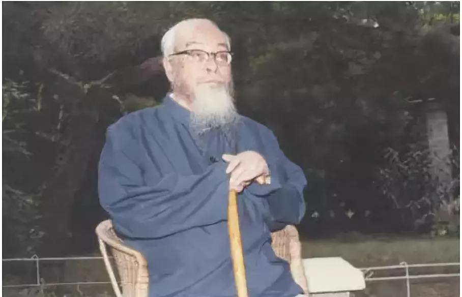
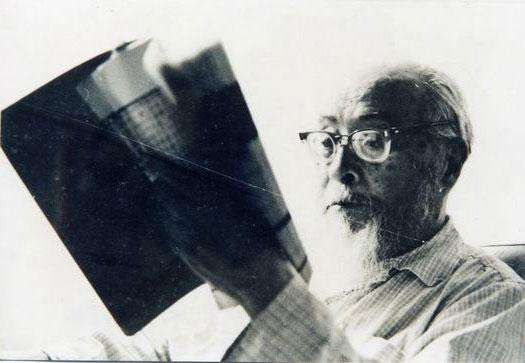
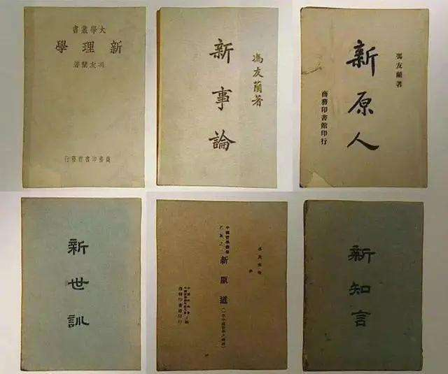

·Introduction

Feng Youlan's photo
Feng Youlan (1895.12.04～1990.11.26), courtesy name Zhisheng, was a native of Qiyi Town, Tanghe County, Nanyang City, Henan Province.
A famous contemporary Chinese philosopher and educator.
In 1918, he graduated from the Philosophy Department of Peking University. In 1924, he received a doctorate in philosophy from Columbia University, under the tutelage of John Dewey.
After returning to China, he successively served as professor, dean of the Department of Philosophy, and dean of the Faculty of Letters of Tsinghua University,
professor and dean of the Faculty of Letters of Southwest Associated University; representative of the 4th National People's Congress, member of the 2nd to 4th CPPCC,
6th to 1st Member of the Standing Committee of the Seventh National Committee of the Chinese People's Political Consultative Conference, and obtained honorary doctorates of literature from Princeton University,
University of Delhi, and Columbia University.
At 20:45 on November 26, 1990, he died in Beijing Friendship Hospital at the age of 95.
·Biography

On December 4, 1895, he was born in Qiyi Town, Tanghe County, Nanyang City, Henan Province.
In 1902, Feng Youlan went to school at the age of 7. He first read The Book of Songs.
In 1907, the Feng family specially hired teachers to be responsible for Feng Youlan's education,
and more formally set up homework such as ancient prose, arithmetic, writing, and composition.
In 1910, according to his mother's advice, he was admitted to the preparatory course of Tanghe County Higher Primary School.
In the spring of 1911, he was admitted to the middle school class of Kaifeng Zhongzhou Public School (now Henan University).
In the summer of 1912, he transferred to Wuchang Zhonghua School.
In September 1915, Feng Youlan was admitted to Peking University's liberal arts department of Chinese philosophy
In 1919, he went to study in the United States.
In 1924, he received his Ph.D. from Columbia University.
·Thoughts

Feng firmly believes that the Chinese nation, which has a profound foundation of five thousand years of civilization, will never perish.
The adversity is only temporary and will soon pass. The day of victory in the Anti-Japanese War is the time for the rejuvenation of the Chinese nation and its culture!
It is with this firm belief that Feng studied more diligently, devoted himself to writing, and devoted himself to sorting out traditional Chinese culture.
From 1939 to 1946, the publication of "Zhenyuan Six Books" constituted a complete "New Neo-Confucianism" philosophical thought system.
Regarding the profound meaning of Feng Youlan's writing of these six books, he had a clear statement in the preface to "New Yuanren":
"'To establish a heart for the world, to establish a life for the people, to continue the unique learning for the sages of the past,
and to open peace for all generations', the philosopher This is what you should hope for. Besides, our country and nation are at the meeting of Zhenyuan,
when we meet with each other, when we reach the heavens and the people, reach the changes of ancient and modern times, and understand the way of inner saints and outer kings.
The country brings peace, what is the purpose of my life and my life? Although I can't reach it, I yearn for it. I can't do it every day. Do it." This fully demonstrated Feng's grand ambition and deep desire.
·Works

·1934: A History of Chinese Philosophy
·Xin Li-xue (New Rational Philosophy)
·Xin yuan ren (A New Treatise on the Nature of Man)
·Xin zhi yan (A New Understanding of Words)
·The Spirit of Chinese Philosophy transl. E.R. Hughes
·Xin yuan dao (A New Treatise on the Nature of Tao)
·A New History of Chinese Philosophy
·Reference
Feng Youlan - BaiduFeng Youlan - WiKipedia